1/06/22 Updates
Swirl Numbers N=0.5,1,3Michael Raba, Msc Candidate
Directions
- Start writing thesis
- Generate more data
- Analysis for Rotating Pipes
Directions
- Start writing thesis
- part 1: nek5000 runs. Necessary to do set up and run. This will consitute a part of my thesis and is a core CFD skill.
- Generate more data: long pipe
- Analysis for Rotating Pipes
- lambda-2 analysis,
- movies of mode reconstruction
- Sufficient time to tie everything together (write core thesis within 1 month ).
Korrektur
- Better POD’s

Comparison
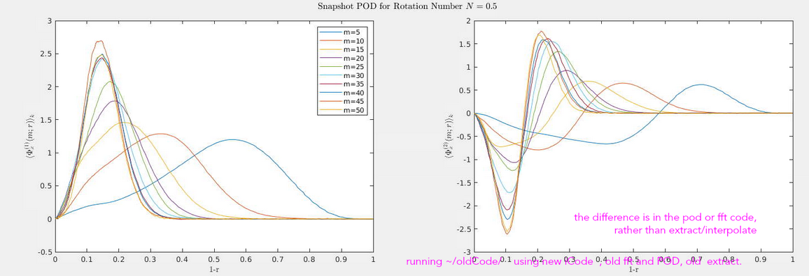
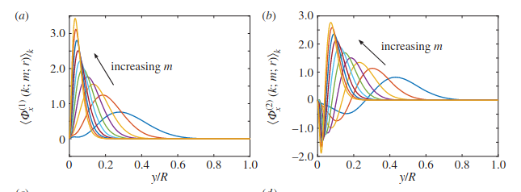
Pressure
N=0
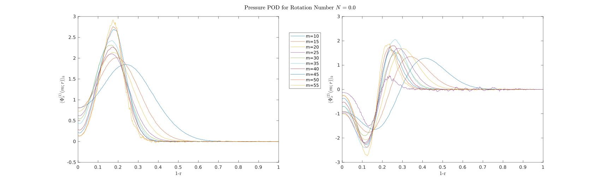
Pressure Smits

Conditional Mode (Reconstruction)
- \(\Psi^{(n)}(m ; \xi, r):= \\ \lim _{\chi \rightarrow \infty} \frac{1}{\chi} \int_0^\chi \lim _{\tau \rightarrow \infty} \frac{1}{\tau} \int_0^\tau \mathbf{u}_{\mathrm{T}}(m ; r, x+\xi, t) \alpha^{(n)}(m ; x, t) \mathrm{d} t \mathrm{~d} x\)
- use eg matlab meshgrid+function `isosurface`
- \(s\) is scaled \(r\) ; \(\xi\) is condition.
IsoSurface (Smits 2017)

Timings
For 99 CS,
| Step | Time [m] | Notes |
|---|---|---|
| Extract | 3 hours | be careful with memory |
| Interpolation | 40 min | dtn |
| double FFT | 17 min | cascade 1 node / 48 cores |
| PODa -> eigs | 23 min | |
| PODb -> flip | 10 min |
Energy Comparison
N=0 Energy
 N=0.5 Energy
N=0.5 Energy

N=3 Energy

- from corrMatrix + eig \(\rightsquigarrow\) cf low Re studies
N=0.0 Energy
N=0.5 Energy
N=3 Energy
Energy Defintions
- Relative azimuthal energy distribution \(\xi^{n} (m)\) defined as
\begin{align}
\xi^{(n)}(m) \equiv \frac{\sum_f \lambda^{(n)}(f, m)}{\sum_n \sum_m \sum_f \lambda^{(n)}(f, m)} .
\end{align}
Relative Energy Numerator
% gg
% we define the numerator, integrated over all k;
for e=1:eSize
for m=rMin:rMax
cSpre = zeros(ncs,1);
for c=1:ncs %
cSpre(c) = real(lam(c).m(m).dat(e,1));
end % c
cS(e).m(m).dat=dk*sum(cSpre(:)); % sum k. this eliminates c from struct.
end % e
end % m
Relative Energy Denominator
dk =0.001;
% we define the numerator, integrated over all k;
for e=1:eSize
for m=rMin:rMax
cSpre = zeros(ncs,1);
for c=1:ncs %
cSpre(c) = real(lam(c).m(m).dat(e,1));
end % c
cS(e).m(m).dat=dk*sum(cSpre(:)); % sum k. this eliminates c from struct.
end % e
end % m
% we define the denominator.
sumTot = 0;
for ee=1:eSize % eigs.
eVec = zeros(18,1); % 18 eigs.
for mm=rMin:rMax
eVec(mm) = real(cS(ee).m(mm).dat);
end % mm
zz=sum(eVec(:)) % sum m
sumTot = sumTot + zz; % sum n.
end % eig (n)
zz=real(sumTot); % try this
cuR=cuSumm(cS); % maybe sum n.
Energy From Other Papers
- Hellstrom 19k
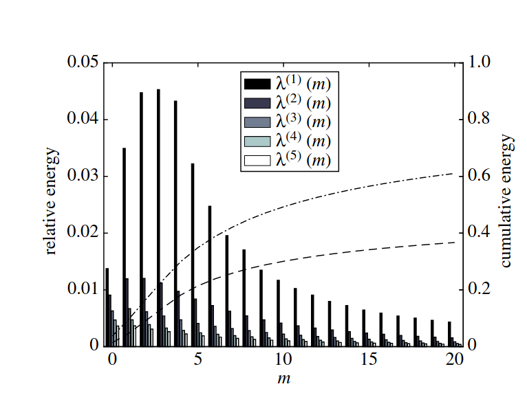
Smits 2009 Developing 3k flow

- note descending mode behavior
Colonius & Freund

Page Intentionally Left Blank
Goal
Replicate hellstrom2018 with DNS data
k-averaged POD Modes
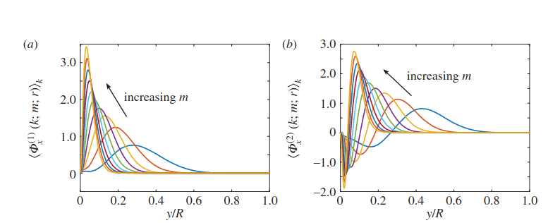
Zero Swirl POD
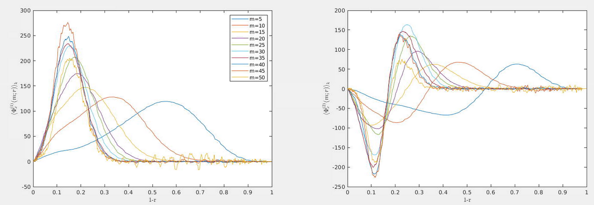
Differences
- Hellstrom’s data is higher resolved streamwise
- we are using 99 streamwise crosssections, vs hellstrom’s 2048.
- moving average? Or Hann window
k-average for No Swirl
- Hellstrom constructs POD modes, and averages \(\Phi_x^{(n)}\) modes in \(k\) direction, because he recognized they are invarient streamwise.
- just look at each POD mode, unique up to \(\pm\) sign, and flip as needed.
k-invarient

Apply to Swirl?
- Not clear if we can do average for Swirl flows; \(\phi_k^{(2)}\) looks quite different
N=3
- shows \(m=5,10,15,20,\ldots, 50\) for \(k=1,2,\ldots, K\)

Qualitative different
- the modes \(m\) look different for each \(k\).
- Sometimes they have 3 peaks, sometimes 2.
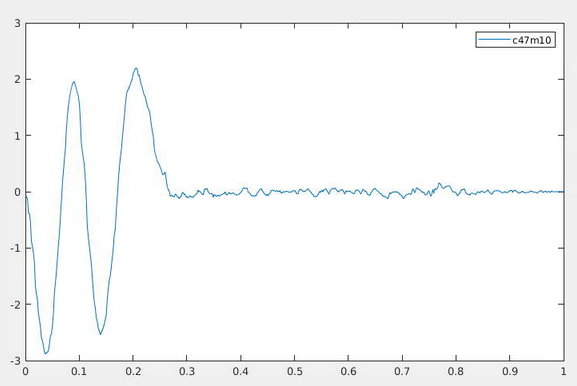
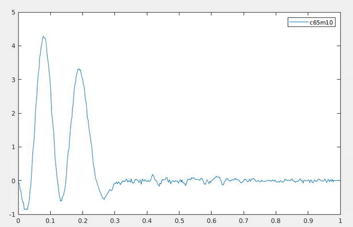
\(N=1\) Swirl
- A naive averaging in \(k\), where it is clear averaging cant be done

\(N=0.5\)
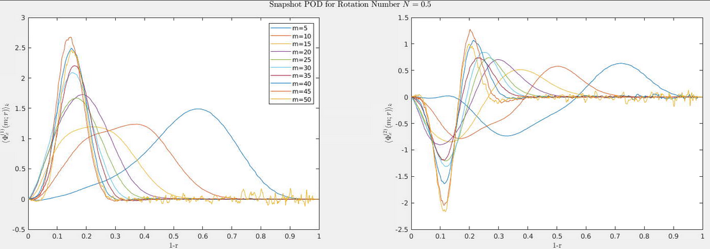
\(N=3\)
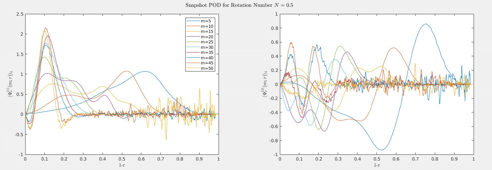
Larger goal:
- describe how the flow’s POD modes evolves down stream.
- Achieve relaminarization
- identity LSM + VSLM,
- which may be not be k-invarient.
- demonstrate Townsend’s attached Eddy Hypothesis and find coherent Structures
Different direction
- use other forms of analysis for Swirl cases
- do not slavishly imitate 1 form of analysis.
- compare to data from hot wire probe
Papers


Papers
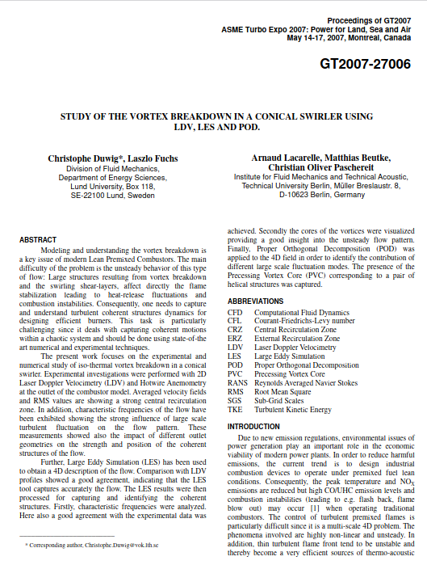
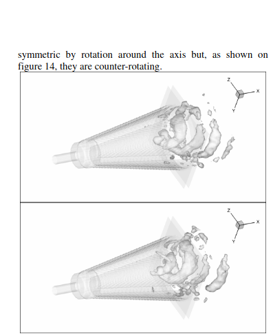
Shows
- precessing vortex core
- vortex breakdown
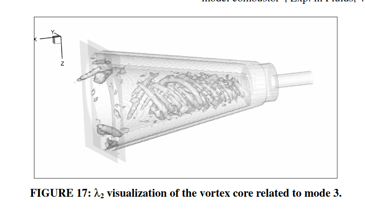